A step-by-step walk-through of single-image roll estimation (GeoCalib, ECCV 2024), worked on two real photos side by side. Audience: basic CV background. spec-100.
We want one number per photo: the roll — how many degrees the camera was rotated about its optical axis (a crooked horizon). EXIF only stores 90° steps, so we must recover it from pixels. The classical trick (detect straight lines, assume they're vertical/horizontal) fails on slanted scenery. GeoCalib instead learns which way is up from scene semantics, then solves a small geometry problem. We'll follow it stage by stage on:
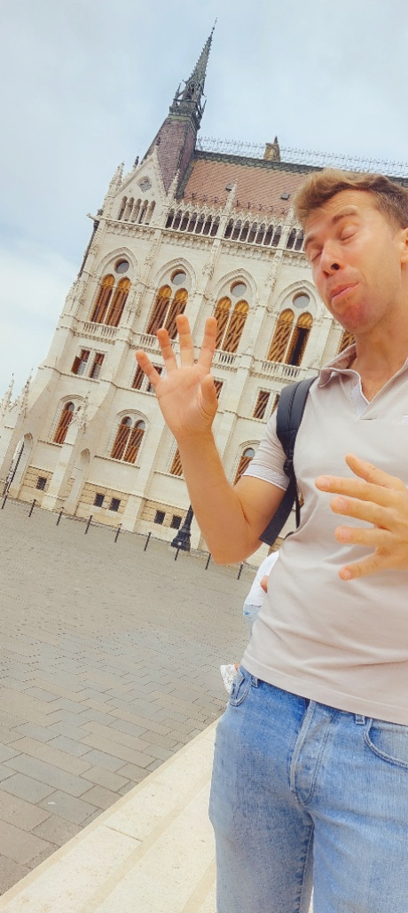
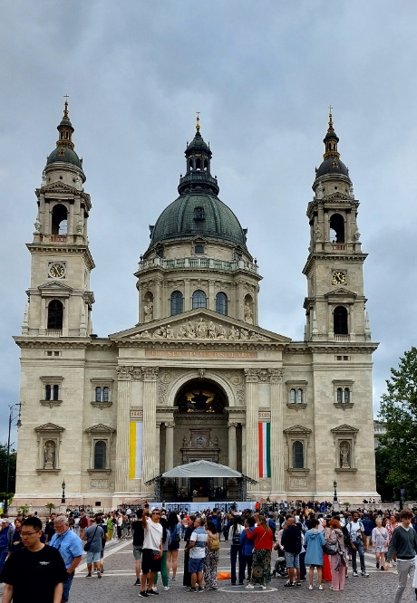
Both are Budapest street shots with strong architecture. The left was shot hand-held and crooked; the right is essentially level. Ground truth is unknown — that's the whole point — so watch how the algorithm arrives at its own answer and how sure it is.
A convolutional network (GeoCalib's backbone) ingests the resized image and outputs, at
every pixel, a unit 2-D vector û(x,y) — the image-plane direction that points
away from gravity there. This is a perspective field: the net infers it from semantic
cues (people stand up, walls and window frames are vertical, the ground is level). Because it reads
content, a slanted painting or a diagonal staircase does not fool it the way an edge detector
would.
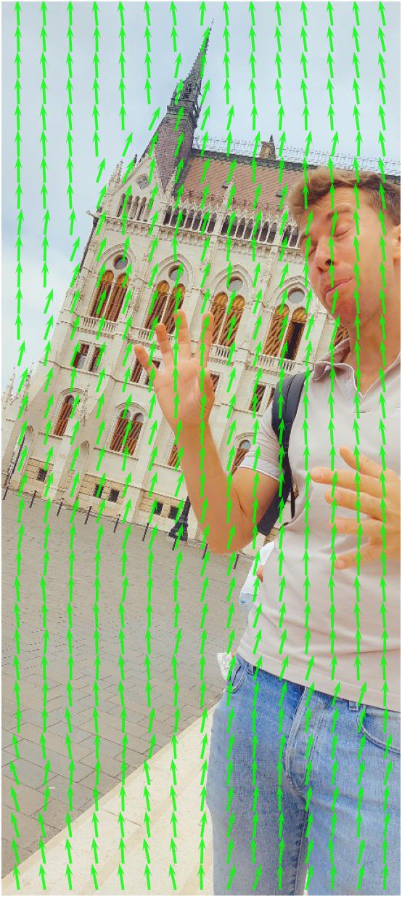
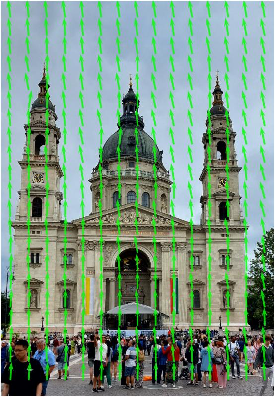
Read the arrows: on the level photo they stand vertical; on the tilted photo they lean together, consistently, by roughly the roll angle. The field is noisy per-pixel (it's a raw prediction) — Step 4 will distill it into one clean camera pose.
The net also predicts a scalar latitude φ(x,y) at each pixel: the angle of that
viewing ray above (+) or below (−) the true horizon. The horizon is simply the
zero-level contour φ=0.
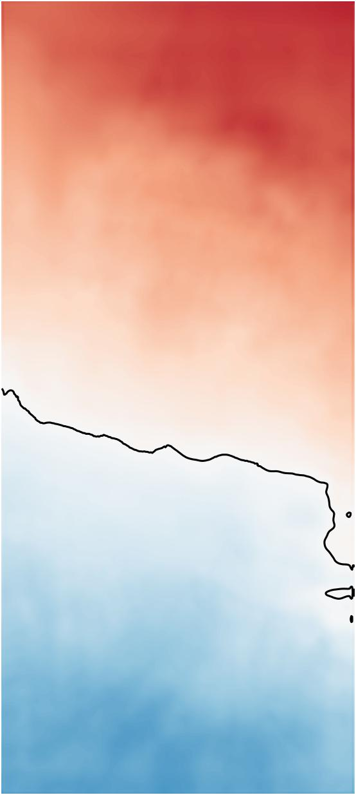
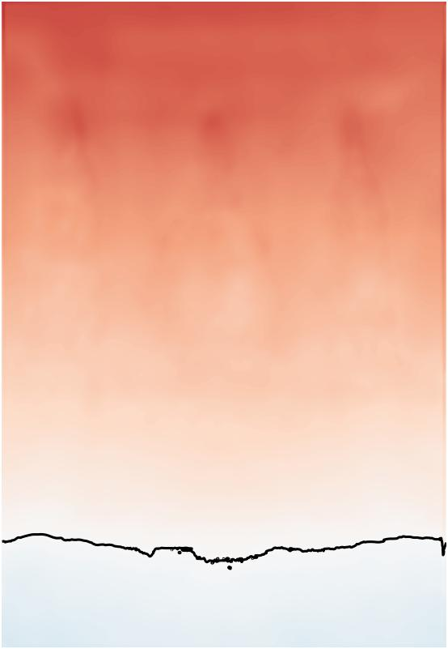
On the tilted photo the horizon contour is visibly sloped — that slope is the roll. On the level one it's nearly flat. (Its vertical position encodes pitch, how far up/down the camera looked — a bonus output we don't use for tilt.)
Crucially, the net emits a per-pixel confidence for its up/latitude estimates. Bright = "I'm sure here," dark = "no usable gravity cue here."
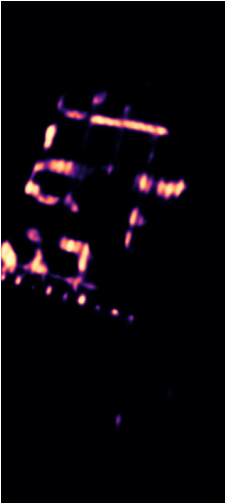
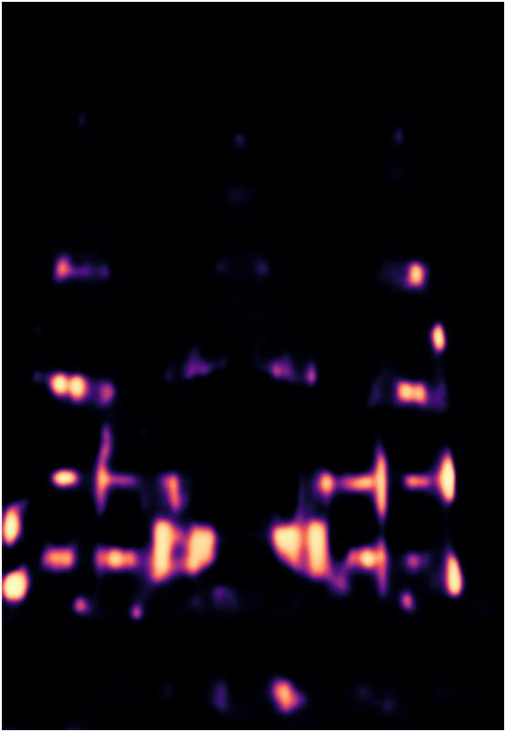
Confidence concentrates on man-made structure — window rows, cornices, straight vertical edges — and collapses on textureless sky. This is the key to safety: a structureless image (think a kaleidoscope mirror room) lights up nowhere, so the solve that follows is barely constrained and reports huge uncertainty. The model abstains instead of guessing.
Now the geometry. A pinhole camera with focal length f, roll r and
pitch p produces an analytic up-field uθ and
latitude field φθ. GeoCalib finds the parameters
θ=(f,r,p) whose analytic fields best match the network's, weighted by confidence:
The result is a single, geometrically-consistent pose. Below, the up-field re-projected from the fitted θ (blue) — smooth and coherent, no longer the noisy raw output — plus the fitted horizon:
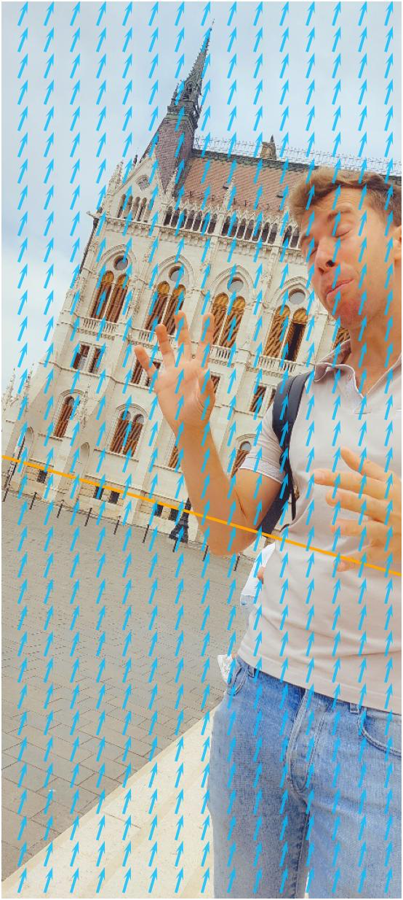
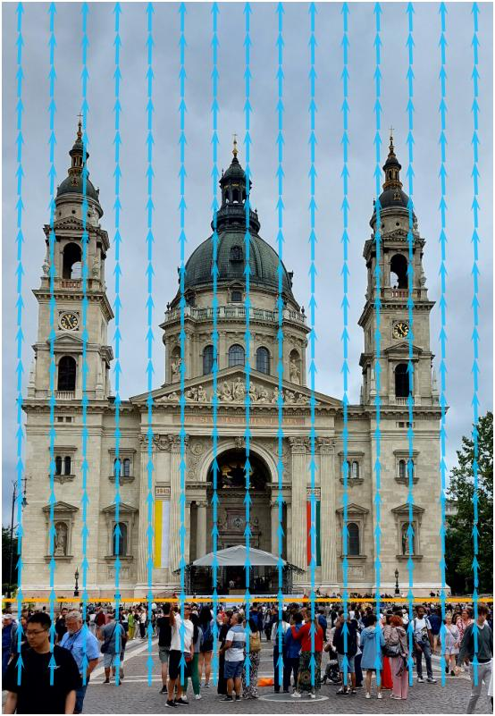
| Fitted parameter | HIGH tilt | LOW tilt |
|---|---|---|
roll r | +16.5° | −0.01° |
pitch p | +6.6° | +12.4° |
| vertical FoV | 79.3° | 35.8° |
Roll is just the in-plane component of the fitted gravity: the angle between the camera's screen-vertical and the fitted scene-up at the image centre.
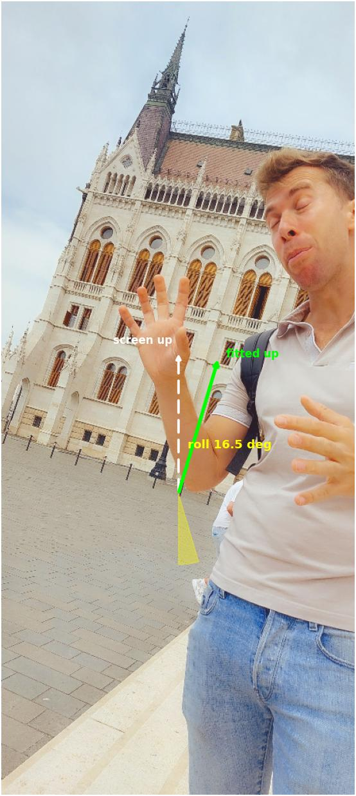
The green "fitted up" on the left runs parallel to the Parliament's true verticals, 16.5° off the white screen-vertical. On the right the two arrows coincide — the shot was level.
Levenberg–Marquardt also returns the covariance of the solution (from the inverse Hessian at the optimum). The roll's standard deviation is our confidence signal:
Both photos are rich in structure, so both solves are tight. Contrast a kaleidoscope/mirror photo from the same album: no consistent up-cue anywhere → σroll ≈ 10–30°. That large σ is how the model says "don't trust this angle," and it's what keeps the pipeline safe.
The pipeline maps σ to a bounded confidence, then applies a small, gated tie-breaker penalty when a photo is confidently crooked:
| HIGH tilt | LOW tilt | |
|---|---|---|
| confidence gate (≥0.5) | 0.62 ✓ | 0.66 ✓ |
| angle gate (|roll|>3°) | 16.5° ✓ | 0.01° ✗ |
| raw penalty −0.02·(|roll|−3) | −0.27 | — |
| final penalty (cap −0.15) | −0.15 | 0.00 |
The tilted photo is confident and well past 3°, so it takes the capped −0.15 — enough to lose a tie against an otherwise-equal straight duplicate, never enough to override real sharpness/occlusion differences (blur > noise > exposure > tilt). The level photo is below the angle gate → exactly zero, so nothing changes.
Rotating each image by −roll levels it. We don't auto-straighten in the pipeline
(out of scope) — but it's the visual proof the angle is right:
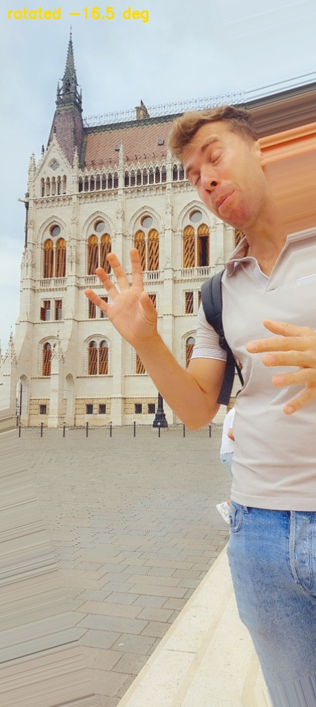
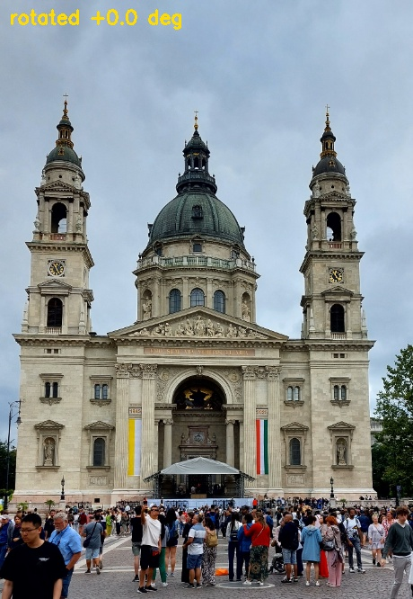
| Stage | HIGH tilt (123528) | LOW tilt (112359) |
|---|---|---|
| up-field arrows | lean together ~16° | vertical |
| horizon (latitude=0) | sloped | flat |
| fitted roll | +16.5° | −0.01° |
| uncertainty σroll | 0.95° | 0.82° |
| confidence exp(−σ/2) | 0.62 | 0.66 |
| penalty | −0.15 | 0.00 |
| outcome | flagged crooked, gently demoted | left untouched |
Generated from
scripts/geocalib_tutorial.py · GeoCalib (Veicht et al., ECCV 2024) ·
spec-100 · all intermediate tensors are the model's real output on these two photos.